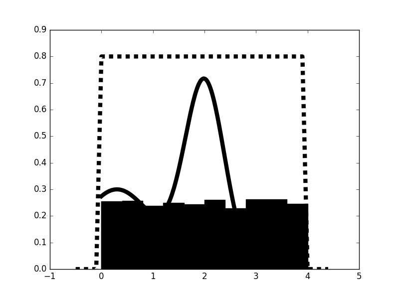
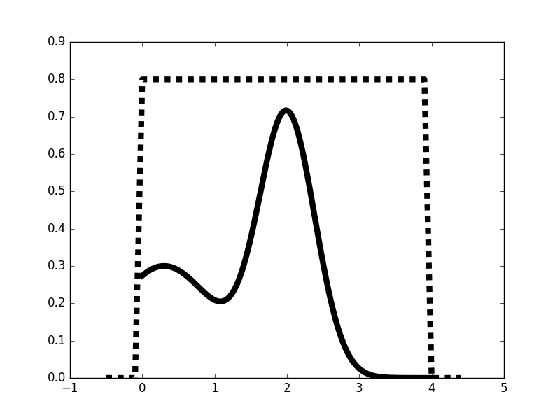
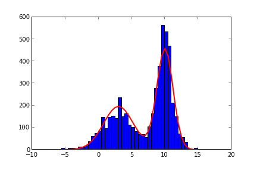
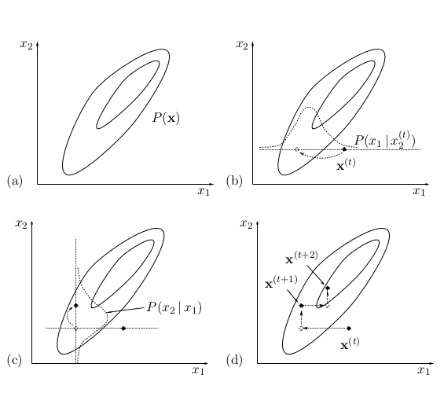
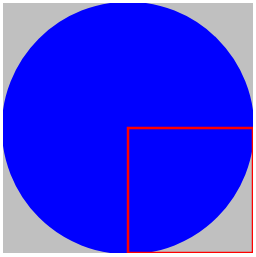
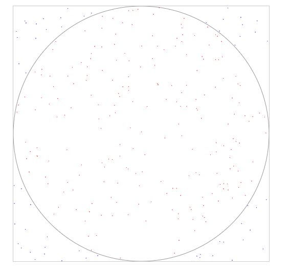

Monte Carlo, Entegraller, MCMC
Fizik, biyoloji ve özellikle makina öğrenimi problemlerinde bazen çok boyutlu bir fonksiyon üzerinden entegral almak gerekebiliyor. En basit örnek, mesela bir dağılımın başka bir fonksiyon ile çarpımının beklentisini (expectation) hesaplamak gerektiğinde, ki bu
$$ E(f) = \int p(x)h(x) \mathrm{d} x $$
entegralidir, $x \in \mathbb{R}^n$, $p(x)$ dağılım fonksiyonu, $h(x)$ herhangi bir başka fonksiyon olmak üzere, o zaman tüm $x$ değerlerini göz önüne alarak (ayrıksal bağlamda ya teker teker geçerek, ya da analitik olarak) entegral hesabını yapmak gerekecekti.
Fakat $p(x)$ bir dağılım olduğuna göre, ve bizim geçtiğimiz her $x$ için bir olasılık değeri varsa, bu işi tersine çevirerek, $p(x)$'teki olasılıklara göre belli (az) sayıda $x$ ürettirirsek, ve sadece bu $x$'leri entegral hesabında kullanırsak yaklaşıksal açıdan gerçek entegral hesabına yaklaşmış oluruz.
Bu mantıklı değil mi? Düşünürsek, mesela 10 değeri 0.4 olasılığında ise, 5 değeri 0.1 olasılığında ise, hem sayı, hem olasılığı ile çarpmak yerine "daha fazla 10 değeri üretmek" ve bu değerleri $h$'e geçmek, toplamak, sonra bölmek, vs. yaklaşıksal olarak aynı kapıya çıkar. Yani
$$ E_N = \frac{1}{N}\sum_{1=1}^N h(x^{(i)}) $$
üstteki entegralin yaklaşıksal temsilidir, $x^{(i)}$ $p(x)$ olasılığına göre üretilen sayıları temsil ediyor. Üstteki bağlantının teorik olarak ispatı da var, bu ispatı burada vermeyeceğiz.
İşte Monte Carlo entegral hesabının artasında yatan numara budur.
Demek ki Monte Carlo entegralının işlemesi için $p(x)$'den örnekleme yapmak gerekiyor. Şimdi ikinci numaraya gelelim. Bazen ne yazık ki $p(x)$'den örnekleme yapmak kolay olmuyor. Mesela alttaki bölümdeki entegralın hesabı zorlaşıyor,
$$ I = \frac{\int h(x) p(x) \mathrm{d} x}{\int p(x) \mathrm{d} x} $$
ki bölünende yine $h(x)$'e göre beklenti almış oluyoruz. Bu durumda $q(x)$ adında kolay örneklenebilen başka bir yoğunluk fonksiyonu buluyoruz. Ve formülü şu hale getirerek bir şey değiştirmiş olmayız [3],
$$ I = \frac {\int h(x) \frac{p(x)}{q(x)} q(x) \mathrm{d} x} {\int \frac{p(x)}{q(x)} \mathrm{d} x} $$
Bu formül bir nevi $q(x)$'e göre alınmış beklentilerin oranı. Aynı numarayı kullanıp entegralı toplam haline getirebiliriz, $x_i$ değerleri $i=1,..,N$ i.i.d olarak $q(x)$'ten örneklenir, o zaman $I$'yi yaklaşık olarak $\hat{I}$ olarak hesaplarız,
$$ \hat{I} = \frac {\frac{1}{N}\sum_{=1}^{N} h(x) \frac{p(x)}{q(x)} \mathrm{d} x} {\frac{1}{N}\sum \frac{p(x)}{q(x)} \mathrm{d} x} $$
Bölünendeki bir $q(x)$'in yokolduğuna dikkat.
Yeni bir değişken $\tilde{w}_i = p(x)/q(x)$ oranı tanımlayabiliriz, normalize edilmiş halde,
$$ w_i = \frac{\tilde{w}_i}{\sum \tilde{w}_j} = = \frac{p(x_i)/q(x_i)}{\sum p(x_i)/q(x_i)} $$
Son formülü iki üstteki formül içine koyarsak,
$$ \hat{I} = \sum_{i=1}^{N} w_i h(x^i)$$
Bu metota Önemsel Örnekleme metotu adı veriliyor çünkü üstteki ağırlıklar bir nevi "önemi" temsil ediyorlar. Bir örnek [1]'den görelim; $q(x)$ için birörnek bir dağılım seçilmiş, belli değerler arasında hep aynı değeri donduruyor.
def qsample(): return np.random.rand()*4.
def p(x): return 0.3*np.exp(-(x-0.3)**2) + 0.7* np.exp(-(x-2.)**2/0.3)
def q(x): return 4.0
def importance(nsamples):
samples = np.zeros(nsamples,dtype=float)
w = np.zeros(nsamples,dtype=float)
for i in range(nsamples):
samples[i] = qsample()
w[i] = p(samples[i])/q(samples[i])
return samples, w
x = np.arange(0,4,0.01)
x2 = np.arange(-0.5,4.5,0.1)
realdata = 0.3*np.exp(-(x-0.3)**2) + 0.7* np.exp(-(x-2.)**2/0.3)
box = np.ones(len(x2))*0.8
box[:5] = 0; box[-5:] = 0
plt.plot(x,realdata,'k',lw=6)
plt.plot(x2,box,'k--',lw=6)
samples,w = importance(5000)
plt.hist(samples,normed=1,fc='k')
plt.savefig('stat_mcmc_02.png')

Altta Örnekleme ve Öneme Göre Tekrar Örnekleme (Sampling İmportance Resampling) metotu için örnek kod,
def p(x): return 0.3*exp(-(x-0.3)**2) + 0.7* exp(-(x-2.)**2/0.3)
def q(x): return 4.0
def sir(n):
sample1 = np.zeros(n)
w = np.zeros(n)
sample2 = np.zeros(n)
sample1 = np.random.rand(n)*4
w = p(sample1)/q(sample1)
w /= sum(w)
cumw = zeros(len(w))
cumw[0] = w[0]
for i in range(1,len(w)): cumw[i] = cumw[i-1]+w[i]
u = np.random.rand(n)
index = 0
for i in range(n):
indices = where(u<cumw[i])
sample2[index:index+size(indices)] = sample1[i]
index += size(indices)
u[indices]=2
return sample2
x = np.arange(0,4,0.01)
x2 = np.arange(-0.5,4.5,0.1)
realdata = 0.3*np.exp(-(x-0.3)**2) + 0.7* np.exp(-(x-2.)**2/0.3)
box = np.ones(len(x2))*0.8
box[:5] = 0
box[-5:] = 0
plt.plot(x,realdata,'k',lw=6)
plt.plot(x2,box,'k--',lw=6)
plt.savefig('stat_mcmc_03.png')

MCMC
Yine $p(x)$'den örnekleme yapılamadığı durum, bu sefer $p(x)$ yerine onu yaklaşıksal olarak temsil eden bir $\pi(x)$'i elde etmekle uğraşılıyor. Bu $\pi(x)$ işe bir Markov Zincirinin (Markov Chain -yine MC harfleri!-) durağan dağılımı olarak hayal ediliyor.
Markov Zinciri teorisinde bir geçiş matrisi, yan Markov Zincirinin kendisi verilir, ve durağan dağılımın hesaplanması istenir. MCMC problemlerinde ise, yani Monte Carlo entegralı için Markov Zinciri kullanıldığı durumlarda elimizde bir $\pi(x)$ dağılımı vardır ve bir Markov Zinciri oluşturmamız gerekir. Nihai dağılımı biliriz, ve bu dağılıma "giden" geçişleri üretiriz. Bu geçişleri öyle ayarlayabiliriz ki üretilen rasgele sayılar hedef dağılımından geliyormuş gibi olur.
Geçişleri üretmek için literatürde bir çok teknik vardır. Önemsel Örnekleme (Importance Sampling), Örnekleme ve Öneme Göre Tekrar Örnekleme (Sampling İmportance Resampling), Metropolis-Hastings, Gibbs Örneklemesi gibi teknikleri vardır, ve detayları değişik olsa da hepsi de MCMC kategorisine girer, ve yapmaya çalıştıkları $\pi(x)$'e giderken bir şekilde bir geçişleri, zinciri ortaya çıkartmak ve bu geçişleri entegral hesabında kullanmaktır.
Üstteki tekniklerden en yaygın kullanılanı Metropolis-Hastings algoritmasıdır.
Şunu vurgulamak önemli, geçişleri üretmek, "bir tür sanal Markov Matrisi" yaratmaktır aslında. Ve her MCMC algoritması bunu farklı şekillerde yapabilir; mesela MH daha basit başka bir dağılım ile ana dağılım arasında sürekli karşılaştırmalar yapar, belli aralıklarda geçiş yapar, diğerlerinde yapmaz, ve bunun bir yan etkisi olarak ortaya bir Markov Zinciri çıkartmış / onu kullanmış olur. O geçişlerin bir Markov Zinciri'ne eşdeğer olduğunun matematiksel olarak ispatı da vardır.
Not: Bu alandaki makalelerde bir dağılımın "belli bir çarpımsal sabite kadar" bilindiği (known up to a multiplicative constant) söylenir. Bu söz aslında şu anlama gelir. Mesela ayrıksal bir dağılımımız var, ama bu dağılımın kendisini, şu halini biliyoruz
[ 4.3 2. 8.4 8.7 1.8]
Bu bir dağılım değil, çünkü öğelerin toplamı 1 değil. Onu bir dağılım haline çevirmek için, tüm öğeleri toplamak ve bu vektördeki tüm sayıları bu toplam ile bölmek gerekir. Toplam 25.2, bölersek
[ 0.17063492 0.07936508 0.33333333 0.3452381 0.07142857]
İlk vektör "belli bir çarpımsal sabite kadar" bilinen dağılım, çarpımsal sabit 25.2. Esas dağılım ikinci vektör.
Peki niye bu sözü söyleyenler toplamı hesaplayıp gerçek dağılımı hesaplamıyorlar? Sebep performans. Bazen ayrıksal dağılım o kadar yüksek boyutlu, fazla öğe içeren bir halde oluyor ki, performans açısından bu basit toplam hesabını yapmak bile çok pahalı oluyor. İşte MCMC metotlarının bir güzel tarafı daha burada, dağılımın kendisi olmasa bile belli bir çarpımsal sabite kadar bilinen versiyonları ile gayet rahat bir şekilde işliyorlar.
Metropolis-Hastings
def p(x):
mu1 = 3; mu2 = 10
v1 = 10; v2 = 3
return 0.3*np.exp(-(x-mu1)**2/v1) + 0.7* np.exp(-(x-mu2)**2/v2)
def q(x):
mu = 5; sigma = 10
return np.exp(-(x-mu)**2/(sigma**2))
stepsize = 0.5
x = np.arange(-10,20,stepsize)
px = np.zeros(x.shape)
for i in range(len(x)): px[i] = p(x[i])
N = 5000
# independence chain
u = np.random.rand(N)
mu = 5
sigma = 10
y = np.zeros(N)
y[0] = np.random.normal(mu,sigma)
for i in range(N-1):
ynew = np.random.normal(mu,sigma)
alpha = min(1,p(ynew)*q(y[i])/(p(y[i])*q(ynew)))
if u[i] < alpha:
y[i+1] = ynew
else:
y[i+1] = y[i]
# random walk chain
u2 = np.random.rand(N)
sigma = 10
y2 = np.zeros(N)
y2[0] = np.random.normal(0,sigma)
for i in range(N-1):
y2new = y2[i] + np.random.normal(0,sigma)
alpha = min(1,p(y2new)/p(y2[i]))
if u2[i] < alpha:
y2[i+1] = y2new
else:
y2[i+1] = y2[i]
plt.figure(1)
nbins = 30
plt.hist(y, bins = x)
plt.plot(x, px*N/np.sum(px), color='r', linewidth=2)
plt.savefig('stat_mcmc_01.png')

Gibbs Örneklemesi
Bu örnekleme metodu Metropolis yönteminin bir versiyonu olarak kabul edilir, Metropolis yöntemlerinde bir teklif (proposal) dağılımı $Q$ vardır, ve bu dağılımın örneklenmek istenen $P$ ile ilişkisine göre zar atılıp elde edilen yeni nokta kabul edilir, ya da kenara atılır. Gibbs ile de bir $Q$ vardır, ama bir cinlik yapılmıştır, $Q$ için $P$'nin kendisi, daha doğrusu onun koşullu dağılım hali kullanılır. Bu koşullu dağılım her $i$ için $P(x_i|{x_j}_{j \ne i}$, burada $x_i$ çok boyutlu $x$'in bir öğesidir, ${x_j}_{j \ne i}$ işe $i$ olmayan diğer tüm öğelerdir. Yani $i$ {\em olmayan} her değişken koşulunda $i$ örneklenir. Bu kullanımın Metropolis yöntemi ile aynı olduğu ispatlanmıştır. Koşullu dağılımın kullanılmasının ana sebebi ise çok boyutlu $P$ zor bir dağılım olsa bile çoğunlukla onun koşullu ve tek boyutlu dağılımının rahatça örneklenebilir halde olmasıdır.
Algoritma şöyle; Rasgele bir başlangıç noktasından başlanır, ve biri harici tüm değişkenler sabit tutulup sabit olmayan değişken örneklenir. Bu işlem sürekli uygulanır, bu yapılınca sanki örneklenen dağılımın en olası yerleri gezilmiş olur.
Mesela 2 boyutta, bir $x^{(t)}$ noktasından başladığımızı farzedelim, $P(x_1|x_2)$ dağılımından bir $x_1$ örneklenir, (b) şeklinde koşullu dağılımın tek boyutlu bir Gaussian olduğunu görüyoruz (çünkü ana dağılım iki boyutlu Gaussian), bu tek boyutlu dağılımdan bir örneklem alınıyor, doğal olarak o tek boyutlu dağılımın tepe noktasının altına yakın bir yerden.

Sonra bu nokta sabitleniyor (yani yeni bir koşullu dağılım yaratılıyor, ve örneklenen $x_1$ şimdi sağ tarafta), yani $P(x_2|x_1)$ dağılımından. Bu bizi $x^{(t+1)}$ konumuna (state) götürüyor, bu böyle devam ediyor. $K$ değişken (boyutundaki) içeren bir sistemde, genel formüller şöyle,
$$ x_1^{(t+1)} \sim P(x_1 | x_2^{t},x_3^{t},..,x_K^{t}) $$
$$ x_2^{(t+1)} \sim P(x_2 | x_1^{t},x_3^{t},..,x_K^{t}) $$
$$ x_3^{(t+1)} \sim P(x_3 | x_1^{t},x_2^{t},..,x_K^{t}) $$
vs..
Monte Carlo ile $pi$ Hesabı
Yaklaşık olarak $\pi$'yi nasıl hesaplarız? İçinde $\pi$ olan hangi formülü biliyoruz? Çember alanı formülü. Bunu nasıl kullanabiliriz. Yarıçapı $r$ olan bir çember düşünelim, ve bu çember bir kare içinde olsun, yani karenin kenarları $2r$,

Bu durumda kırmızıyla işaretli bölgenin alanı $r^2$. Mavi çemberin alanı ise $\pi r^2$, çemberin kırmızı bölge içine düşen kısmi $\pi r^2 / 4$. O zaman ufak karenin oradaki çember kısminin alanına olan oranı $p = \frac{\pi r^2}{4}$ olur. O zaman, eğer iki boyutlu birörnek bir dağılımdan (yani üstteki karenin içine düşecek sayılar) örneklem alırsak, bu her sayı için çember içine mi düşüyor, dışına mı düşüyor hesabı kolay, $x,y$ sayısı için $x^2+y^2 < r^2$ ise çember içinde, değilse dışında. İçeri düşen sayıların oranını $p$ kabul ederiz, bu sayıyı 4 ile çarpınca yaklaşık $\pi$ elde edilir.

import random
NB_POINTS = 10**4
LENGTH = 10**5
CENTER = [LENGTH/2,LENGTH/2]
def in_circle(point):
x,y = point
center_x, center_y = CENTER
radius = LENGTH/2
return (x - center_x)**2. + (y - center_y)**2. < radius**2.
def compute_pi(nb_it):
inside_count = sum(1.0 for _ in range(nb_it) if \
in_circle( (random.randint(1,LENGTH),random.randint(1,LENGTH)) ) )
return (inside_count / nb_it) * 4.
if __name__ == "__main__":
print u'yaklaşık', compute_pi(NB_POINTS), u'gerçek', np.pi
yaklaşık 3.1432 gerçek 3.14159265359
Kaynaklar
[1] Marsland, Algorithmic Machine Learning
[2] MacKay, Information Theory, Inference and Learning Algorithms
[3] Turner, An Introduction to Particle Filtering, http://www.lancaster.ac.uk/pg/turnerl/PartileFiltering.pdf
Yukarı